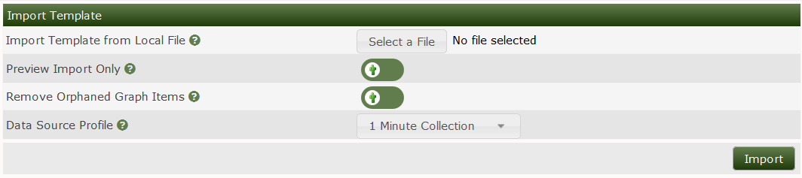

This section will describe Template Importation in Cacti.
Templates are used to add support for more graph types and differnt devices Templates are written using xml these templates can either be custom made or you could download them from the community on the cacti forums. Once you have downloaded the graph/device template you are looking for you will need to import the template into the cacti system. To import a device/graph template go to Console >> Import >> Import templates you will now see the below page
.
Important note when importing the template be sure to match the data source profile with your polling time Now click on select file and browse to where the XML file is located on your computer select the XML files You have a choice to preview the import to check for any issues with the template before doing the import Once you have verified everything is error free disable the preview Import only option then click import to import the template
Copyright (c) 2004-2019 The Cacti Group